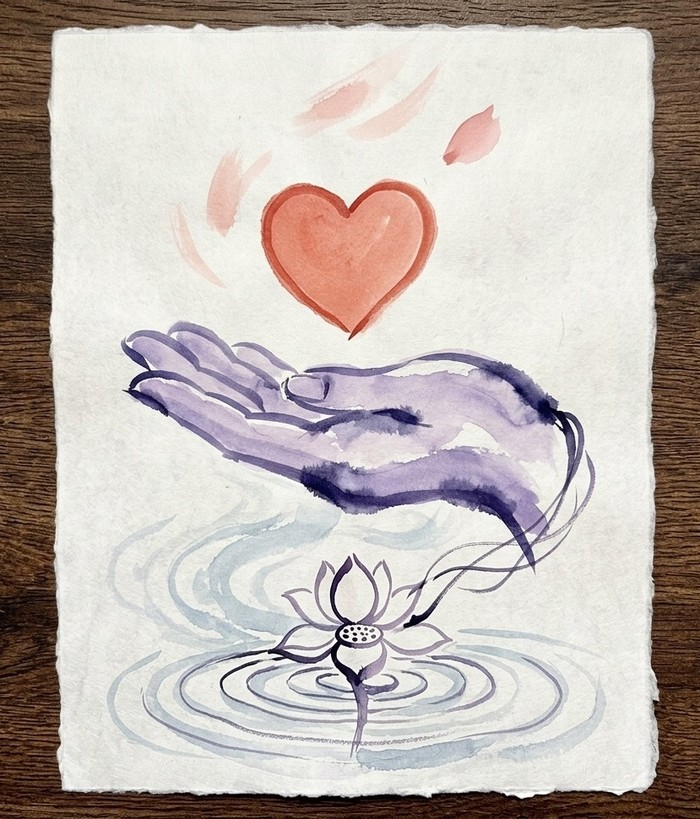

This page doesn't exist — but plenty of campaigns still need a first "yes."
Oops - Whatever you were looking for isn't here. It might have moved, or the link might just have changed or been deleted — either way, here's another page for you.
Back to today's featured campaignNeed further assistance? Email us at hello@curateindie.com